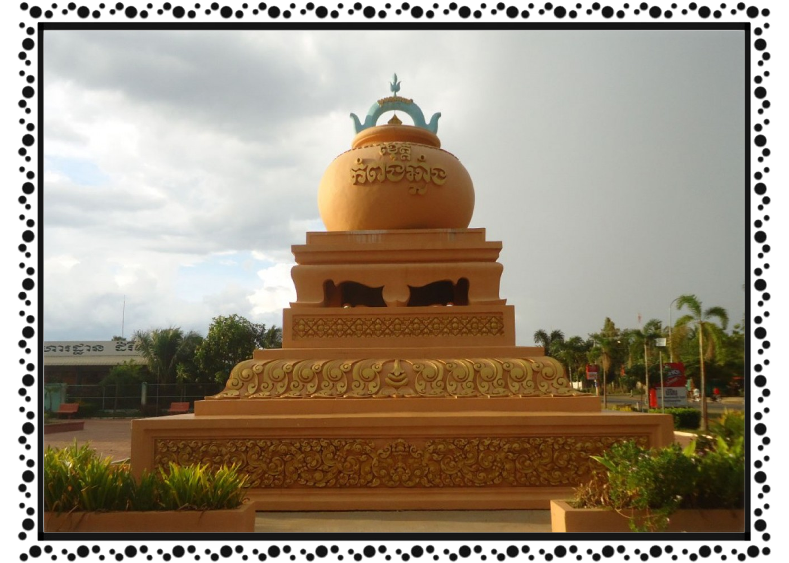

ខេត្ត និងក្រុងនៃព្រះរាជាណាចក្រកម្ពុជា
កំពង់ឆ្នាំង
 កំពង់ឆ្នាំង ជាខេត្តមួយ ស្ថិតនៅភាគកណ្តាលនៃប្រទេស កម្ពុជា។ ខេត្តកំពង់ឆ្នាំង ជាខេត្តល្បីខាងផលិតក្អមឆ្នាំងមានគុណភាពល្អ អំពីដី។ ខេត្តជិតខាងគឺ (ពីខាងជើងតាមទ្រនិចនាឡិកាវិល) កំពង់ធំ កំពង់ចាម កណ្ដាល កំពង់ស្ពឺ និង ពោធិ៍សាត់។ ក្រុងទីរួមខេត្តកំពង់ឆ្នាំងគឺក្រុងកំពង់ឆ្នាំង។ ខេត្តកំពង់ឆ្នាំងស្ថិតនៅភាគកណ្ដាលប្រទេសកម្ពុជា។ ខេត្តកំពង់ឆ្នាំងមានព្រំប្រទល់ខាងជើងជាប់ខេត្តកំពង់ធំ ខាងកើតជាប់ខេត្តកំពង់ចាម ខាងត្បូងជាប់ខេត្តកំពង់ស្ពឺ និងខាងលិចជាប់ខេត្តពោធិ៍សាត់។ ខេត្តនេះស្ថិតនៅចម្ងាយប្រមាណ ៩១ គ.ម. ពីរាជធានីភ្នំពេញ។ ខេត្តកំពង់ឆ្នាំងមានអាកាសធាតុក្ដៅហើយសើមដូចបណ្ដាខេត្តទូទាំងប្រទេសកម្ពុជាដទៃទៀតដែរ។ រដូវវស្សាចាប់ពីខែ ឧសភា ដល់ខែ តុលា (សីតុណ្ហភាពពី ២៧ ទៅ ៣៥អង្សា សំណើម ៩០ % ) រដូវរងារពីខែ វិច្ឆិកា ដល់ខែ មីនា (សីតុណ្ហភាពពី ១៨ ទៅ ២៨ អង្សា) និងរដូវក្ដៅពីខែ មីនា ដល់ ខែ ឧសភា (សីតុណ្ហភាពពី ២៨ ទៅ ៣៦ អង្សា)។ វាគឺស្ថិតក្នុងវាលល្បប់ចំកណ្ដាលប្រទេសកម្ពុជានិងត្រូវនាំមកដោយទន្លេសាប ដៃនៃទន្លេមេគង្គ។ ទីក្រុងរាជធានីភ្នំពេញច្បាស់ជាលូតរហូតដល់វាព័ទ្ធជុំវិញដោយព្រំដែនខេត្តកំពង់ឆ្នាំងជាមិនខាន។ សំណល់បុរាណវត្ថុពីតំបន់នេះត្រូវបានគេដឹងថាចំណោមវត្ថុបុរាណជាច្រើនដែលគេរកឃើញនោះគឺមកពីទ្វារវត្តី អតីតនគរមួយដែលបច្ចុប្បន្នស្ថិតក្នុងប្រទេសថៃសព្វថ្ងៃ ដោយចុះកាលបរិច្ឆេទពីសតវត្សទី៦ ដល់ ទី១១។[ប្រភព?] ខេត្តកំពង់ឆ្នាំងកាលពីប៉ុន្មានសតវត្សកន្លងទៅគឺជាទីក្រុងឆ្នេរនៅតាមច្រកផ្លូវរវាង ចិន និង ឥណ្ឌា ដោយសារតែការហូរនាំដីល្បប់ពីទន្លេមេគង្គ ខ្សែឆ្នេរបានកាន់តែឃ្លាតឆ្ងាយពីសមុទ្រឆ្ងាយៗទៅ។ នៅពេលដែលទន្លេសាបបានផ្លាស់ប្ដូរខ្សែទឹកហូររបស់វា ទីក្រុងនេះក៏បានបាត់បង់ប្រភពទឹកដ៏សំខាន់របស់ខ្លួន និងដូច្នេះវាក៏បានក្លាយជារហោស្ថាន ប្រជាជនក៏រើលំនៅទៅកាន់ទីក្រុងមួយដែលគេហៅថា កំពង់ត្រឡាច។ ទីក្រុងមួយបានកកើតបន្តិចៗម្ដងជុំវិញទីនោះ ដែលនាំមកនូវជីវិតថ្មីដល់កំពង់ឆ្នាំង។ សារមន្ទីរមួយបង្ហាញនូវកំណត់ត្រាបុរាណវិទ្យាអំពីប្រវត្តិរបស់ទីក្រុងមួយនេះ។